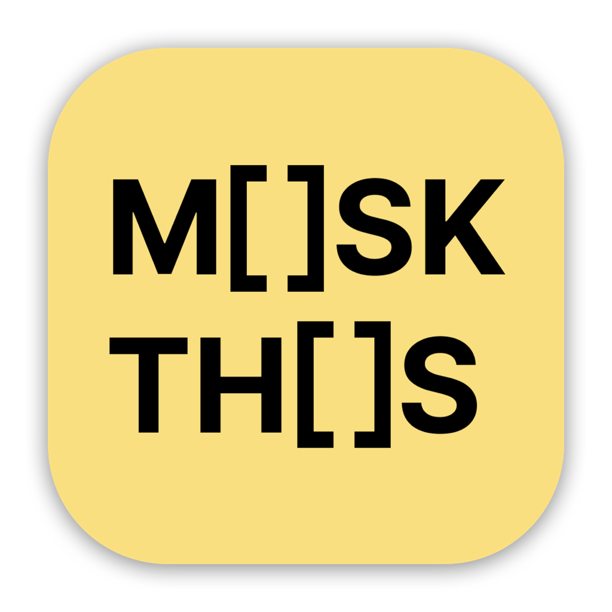

Mask This is private by design. Masking is performed locally using Apple Foundation Model. Your data never leaves your Mac and is not collected.
The app runs in the background and is accessible via the Menu Bar. To close the app, select Quit Mask This in the menu.
Choose between Auto and Manual modes. Auto is active by default. Toggle Mask Clipboard Automatically to switch.
In Auto mode, the app masks sensitive data in clipboard every time you copy. In Manual mode, use Mask Clipboard Content or press the shortcut (Cmd+Shift+M by default) to mask content in clipboard.
Stay informed with notifications whenever clipboard content is processing or masked. You can disable these notifications by switching off the Show Progress Notifications and Show Result Notifications toggles.
Start Mask This automatically when you log in. To enable this, simply turn on the Launch at Login toggle.
Need more help? Contact us at dmitrii@tseiler.tech